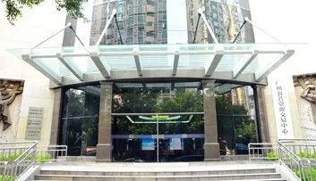
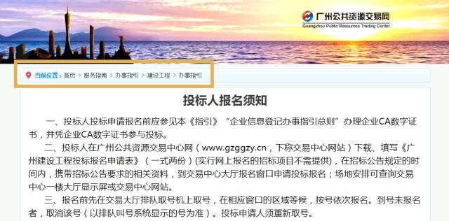
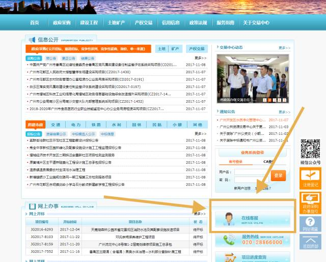
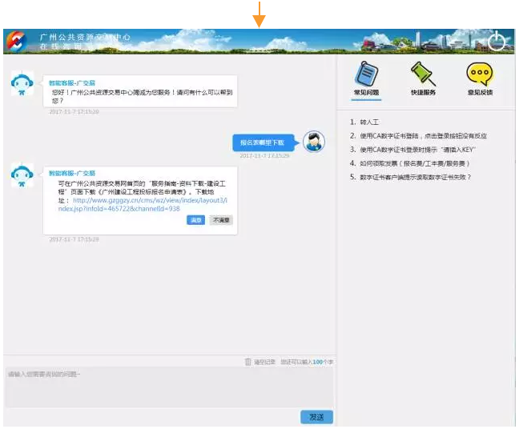
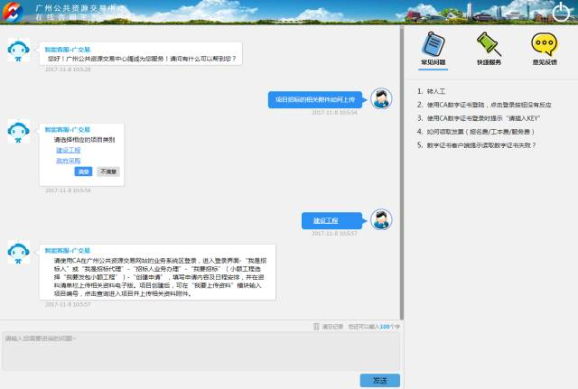
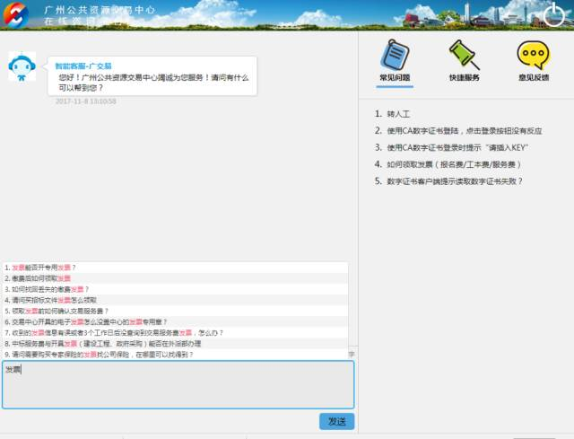
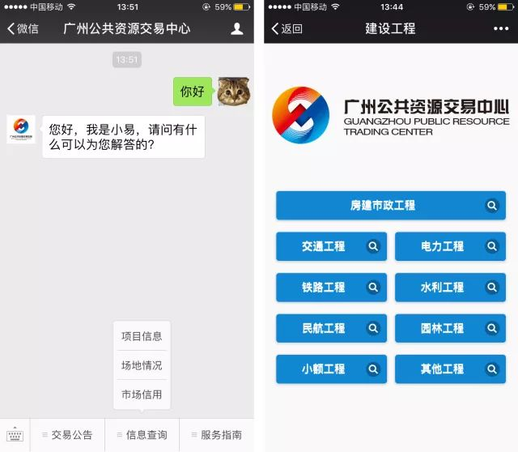
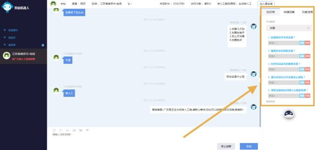
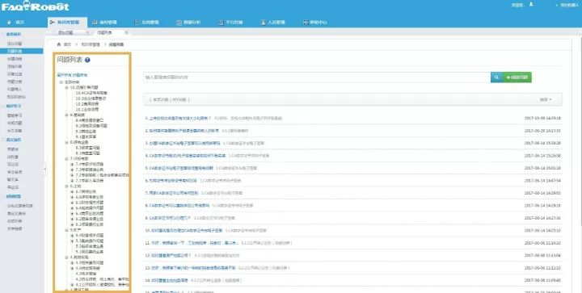

微信扫一扫
关注该公众号


导语：近年来，随着政府改革步伐的加快以及人工智能、云计算等新技术的兴起和运用，我国的电子政务发展将更加突出以人为本的理念，更加强化公共服务和管理能力，加大新技术、新理念的运用，电子政务建设和政府网站发展将会进入新一轮的扩能提质、改版升级阶段。当前我国政府网站也正处于由“内容导向”到“服务导向”过渡的发展阶段。
项目背景


广州，是国务院定位的国际大都市、国际商贸中心。从2017年上半年经济总量看，广州以9891.48亿元居26省会城市之首，接近“万亿级”，成为全国GDP总量最高的省会城市。广州的经济贸易量一直以来居全国前列。
广州公共资源交易中心诞生于2013年7月，是由广州市委市政府和市纪委着力打造的由原建设工程交易、政府采购、信息工程招投标、土地和矿业权出让以及综合性产权交易等6大公共资源交易平台整合而成的综合型公共资源交易中心。

广州公共资源交易中心本部一、面临的挑战
1、用户查询、资料下载等流程繁琐
以往，群众或交易主体想咨询关于公共资源交易方面的问题或想下载相关资料，总是要在交易中心官网上花很长时间才能找到相关的页面。因为对政策的不了解办了糊涂事、花了冤枉时间的情况也总是能见到。
例如：用户想要查询投标人报名须知，需要登录交易中心网站>【服务指南】>【办事指引】>【建设工程】>【投标人报名须知】，要经历如此多的步骤才能找到想要了解的知识。
 资料查询、下载等流程繁琐，耗时耗力2、业务量繁忙、咨询量大
作为全国进场交易业务领域最广的公共资源交易平台之一，交易中心业务涵盖建设工程交易、政府采购、土地使用权和矿业权出让、政府特许经营权出让和综合性产权交易等。其中仅建设工程就涵盖了中央、省、市、区、镇（街）、村共6级的房屋建筑、市政、园林绿化、交通、水利、电力、民航和铁路等众多工程项目。交易中心设置了26个部门为各交易主体提供近40种交易类专业服务。
因此，交易中心工作人员每天需要面对大量的业务问题和咨询问题，常常焦头烂额。同时，用户也因此耽误了很多宝贵的时间和精力。
3、平台数据量大、资料信息多，不便于管理和利用
为了给电子化招投标、诚信体系建设和行业监管提供详实可靠的数据基础，交易中心储存了庞大的业绩数据和各类企业库的完备资料，这些数据和资料难以被统一起来充分管理和应用。
二、云问的解决方案
1、方便的查询和下载流程
云问的智能客服机器人系统在交易中心服务平台为社会公众、各方交易主体提供了全程、高效、便捷的服务，24小时在线提供相关咨询、查询服务，用户可以在几秒钟之内就获得想要的信息，大大节省了时间，也提高了群众对政务服务的满意度。
在广州公共资源交易中心的官网或者微信公众号，用户可以轻松地与客服机器人进行对话。
 进入官网首页点击机器人在线客服  向机器人提出问题，依照平时用户的咨询习惯，交易中心工作人员运用云问智能客服机器人系统在后台人性化地设置了流程引导，当用户遇到一些比较复杂的问题时，在线客服机器人会给出引导，引导用户一步步地找到相应的解决方案。
 客服机器人对用户进行流程引导  客服机器人也具有输入引导功能，2、多渠道智能服务
为了提高办事效率和更好地满足交易各方的需求，在交易中心的微信公众号也能实现智能机器人服务。和在网页端一样，用户可以向机器人客服咨询和查询各类业务问题。
 接入微信端的智能客服系统云问智能客服机器人在交易中心的官网和官方微信公众号上线三个月以来，服务了近8万人次的访客量，解决了数十万次的咨询问题，不仅为广大民众提供了十分便捷的服务渠道，也大大缓解了交易中心工作人员的工作量，获得了一致的好评。
3、机器+人工的协同合作方案
当机器人遇到未知问题或者一些比较敏感的问题时，用户可以选择转人工客服回答。人工客服会收到服务请求，接管后可查看机器人之前与访客的聊天记录，然后对访客进行回答。
同时人工客服还可以利用系统的智能知识库检索功能进行自主查询，快速获得答案。如果客服觉得后面的问题机器人可以处理了还可无缝切换给机器人，从而最大限度地节约了人力。
 人工接管后可以通过知识库4、构建并优化专属知识库
广州公共资源交易中心通过对交易业务及流程的深入理解，归纳出常见的业务知识，构建和优化专属的智能问答机器人知识库，并通过机器人后期的智能学习，可以准确地回答与其业务相关的大部分常见问题。包括政策解答、交易常见问题解答、业务流程引导、办事事项指引等，为群众提供了巨大的方便，显著提高了站点用户体验和平台服务效率。
 系统后台的专属知识库系统的专属知识库整合了政务、企业、互联网等多渠道数据资源，为政府各部门、各行业的信息化管理以及经济预测、社会管理及决策等提供了大数据分析等综合应用服务，推动了大数据在经济运行中的应用和发展。
结语

智能在线政务服务是政府网站建设的一个新趋势，广州公共资源交易中心作为广东省电子政务建设的重要组成部分，在创新政务智能服务方面走在了前列。
云问为广州公共资源交易中心提供可控、可衡量、全天候的人机互动智能服务平台，以公共服务、公众互动、政务公开为主，提升网上服务质量，为民众带来更精准、更全面、更人性化的在线智能服务，通过智能技术应用带给用户“智慧政府”的新感受。
— End —